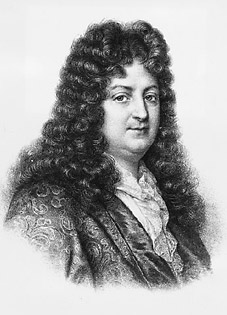

Racine

.Với những quan niệm đã được khuôn đúc vào những ký ức về những năm cuối bậc phổ thông, chúng ta khó lòng chấp nhận được ý kiến cho rằng Jean Racine [1639-1699 ] lại là một nhà thơ bị nguyền rủa.
Vào đầu thế kỷ XIX, Stendhal đã đội lên đầu Racine cũng như Boileau một “mớ tóc giả già nua” của các viện sĩ hàn lâm. Vào cuối thế kỷ, Verlaine đã tạo ra khái niệm “những nhà thơ bị nguyền rủa”. Nhưng Verlaine chỉ dành cho những con người đương thời với ông: Baudelaire, Mallarmé, Rimbaud. Chính là chủ nghĩa duy lý, chủ nghĩa khoa học vạn năng, tinh thần đạo đức tư sản và dân chủ của thời đại đã ngược đãi cái chân lý của các nhà thơ.
Ở thế kỷ XVII, không có một nhà tư sản hay một người dân chủ nào nắm quyền lực. Song le người ta nhớ lại rằng Platon và nhiều cha cố nhà thờ đã đuổi Homerè ra khỏi nền “Cộng hòa” của họ. Racine, bước vào Hàn lâm viện Pháp năm 1673, được phong chức nhà chép sử chính thức của hoàng gia năm 1677 và là một quý tộc trong Vương cung năm 1690, ăn ở trong cung điện Versailles năm 1695, rõ ràng đã có một sự nghiệp khác hẳn với Théophile de Viau (bị bỏ tù) với Etienne Durand (bị hỏa thiêu) hay D’Assoucy (trở thành kẻ lang thang). Nhưng sự “nguyền rủa”, cả theo nghĩa mà Verlaine ám chỉ, không giới hạn ở cái số phận tỏ tường của các nhà thơ. Nó có thể hành hạ họ từ thế giới nội tâm. Từ năm 1663 đến 1667, và rồi từ năm 1689 đến 1691, Racine đã đưa ra dưới ánh sáng của thi đàn một thứ thơ ca lạ lẫm, dữ dằn, bị bài xích kịch liệt. Tập thơ này có thể đánh lừa: Bề ngoài xem ra nó ngoan ngoãn tuân thủ những quy tắc nghiêm ngặt nhất của thơ cổ điển, và mang lại khoái cảm cho người nghe bởi âm vận hài hòa tuyệt vời của nó. Nhưng dưới lớp áo nề nếp và duyên dáng đó có biết bao cái đột phá và tiếng kêu gào vì hận thù, đau đớn và say mê, bao sự thực kinh hoàng của trái tim.
Trong cuốn tiểu sử tuyệt vời Cuộc đời Racine xuất bản năm 1927, Francois Mauriac chỉ ra cái khoảng cách kinh ngạc giữa những biểu hiện thông thường đương thời, vốn nhạt nhẽo và phởn phơ, với cái mà Racine gợi lên về niềm đam mê tình ái: Sự cuồng nộ và những lời thầm thì của yêu đương. Vua và các triều thần quý tộc, không đạo đức giả như những tên thị dân của Baudelaire, tự tìm thấy mình trong sự đồi bại của Néron, sự hung tợn của Roxane, ngọn lửa và sự đau đớn của Phèdre, sự đam mê quyền lực thay thế cho sự ám ảnh nhục dục ở viện đại giáo sĩ Joad cũng như ở bà hoàng hậu Athalie phản đạo.
Một nghệ thuật, cả khi dưới những hình thức hoàn hảo nhất, dám nói lên cái địa ngục của sầu đau và nỗi thống khổ thiêu đốt trái tim con người, thì đấy là một thứ nghệ thuật bị nguyền rủa. Racine biết điều đó, ông đã bị cái đó hành hạ hơn bất cứ ai khác đã kế thừa ông trong thế kỷ XIX. Thứ nghệ thuật phù thủy đó bị những giới chức tôn giáo nguyền rủa, những người mà nhà thơ, từ thời thơ ấu của mình đã kính ngưỡng họ hơn bất cứ ai khác. Nó bị nguyền rủa bởi vị chúa Trời ẩn mặt và khủng khiếp mà những giáo sĩ ở Port Royal đã khắc vào tâm khảm ông nỗi sợ hãi. Ông bị nguyền rủa bởi đối thủ chính của mình là Corneille, người lên án mạnh mẽ thứ khoa học đáng ngờ về Eros mà Racine dựng lên trên sân khấu. Và ông còn bị nguyền rủa bởi cả, vua và triều đình, những người không nghi ngờ gì, tuy từ thâm tâm đã thấy ra chất nổi loạn của nhà thơ, nhưng lại đã thu xếp bằng việc ban cho ông những danh dự chính thức để làm ông phải im tiếng.
Mauriac giả định rằng Racine, với cái khí chất u sầu và ham khoái lạc, từng bị lừa dối bởi những diễn viên và những kỹ nữ tiếng tăm nhất thời đó, đã nếm trải những vết thương cháy bỏng của tội ác và thất vọng được nói lên trong tác phẩm Phèdre. Ông đã tự trốn chạy mình cũng như đã trốn chạy sân khấu, khi sau năm 1677 (với vụ hôn nhân, tình cha con, những vinh dự và những lời lên án tại triều đình), ông đã chọn sự im lặng triệt để giống như Rimbaud khi ở Harar (Ethiopie) chỉ thêm thắt những bài thơ có tính chất răn đời. Theo yêu cầu của Madame de Maintenon và của nhà vua, hai vở bi kịch cuối cùng của ông lấy cảm hứng từ Kinh Thánh, miêu tả những cuộc đấu tranh của quyền lực dân sự và quyền lực tôn giáo.
Bên cạnh Cuộc đời Racine của Mauriac, cần đọc thêm cuốn Racine của Thierry Maulnier (1935) để thực sự hiểu được thơ ca bị nguyền rủa của ông.